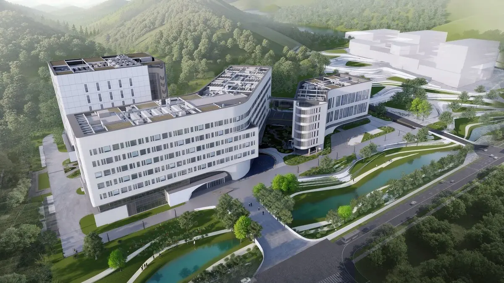

Contact
Wei Lu
Senior Investigator · Principal Investigator
- Academic inquiries
- luwei@smart.org.cn
- Recruitment inquiries
- gaba@smart.org.cn
How to apply → - Address
- Shenzhen Medical Academy of Research and Translation
Laboratory of Molecular Cognition
Weiguang Life Science Park, Guangming District, Shenzhen, China - Phone
- Office
